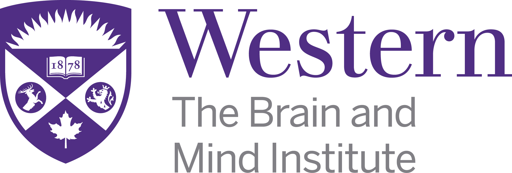

Project Title: Studies in auditory category learning, memory, and generalization
Principal Investigator:
Dr. Ingrid Johnsrude,
Department of Psychology,
The Brain and Mind Institute,
Western University
1. Invitation to Participate
You are being invited to participate in this research study because you replied to an advertisement about the study.
2. Purpose of the Letter
The purpose of this letter is to provide you with the information required for you to make an informed decision regarding participation in this research.
3. Purpose of this Study
The study aims to investigate the ways in which listeners learn and remember details from their auditory environments, as well as how listeners apply this knowledge to novel listening situations. This research might provide insights into how humans are able to acquire complex auditory systems such as speech and music.
4. Inclusion Criteria
Individuals who are 17 years old or older with no known history of hearing difficulty are eligible to participate in this study. Where possible, we aim to recruit equal numbers of male and female participants.
5. Exclusion Criteria
Individuals who are under the age of 17 years old are not eligible to participate in this study. In addition, individuals who have a known history of hearing difficulty are not eligible to participate given the auditory nature of the study. You also must be in a quiet listening environment and wear headphones to participate.
6. Study Procedures
If you agree to participate, you will first complete a short auditory task in which you make basic loudness judgments about sounds you hear. The purpose of this task is to allow you to adjust the computer volume to a comfortable listening level, as well as to confirm that your headphones are working properly. It should take no longer than 5 minutes.
You will then complete the primary task, which involves listening to and making judgments about various sounds. In this primary task, you may be asked to make several kinds of judgments, including (1) identifying a sound as belonging to a particular category, (2) determining whether a sound is similar or different to one that you heard previously, (3) listening to and making judgments about familiar sounds that you have heard outside of the context of this study (e.g., familiar musical melodies). You may receive feedback during some of the main task to let you know how you are performing. The main task is expected to last 20 minutes.
Next, you may be asked to complete some questionnaires. These questionnaires will ask you to provide basic demographic information, language background, musical background, and your perceived general health and hearing abilities. You may skip any question that you do not wish to answer. The questionnaires are expected to last 5 minutes.
It is anticipated that the entire experiment will take 30 minutes.
7. Possible Risks and Harms
There are no known or anticipated risks or discomforts associated with participating in this study.
8. Possible Benefits
You may not directly benefit from participating in this study, but information gathered may enhance the scientific understanding of how humans are able learn and remember details from their auditory environments, which has potential implications for improving language and music learning in the long term.
9. Compensation
You will be compensated at the rate of $5 per half hour for your participation in this study (or, if you are a member of the Department of Psychology Research Participation Pool, then you may instead choose to receive 0.5 course credits per half hour). If you do not complete the entire study you will still be compensated for the time from the beginning of the study up to the point of withdrawal.
10. Voluntary Participation
Participation in this study is voluntary. You may refuse to participate, refuse to answer any questions or withdraw from the study at any time with no effect on your future academic status or future eligibility to participate in a research study.
11. Confidentiality and Data Storage
Personally-identifiable material will remain confidential and will not be shared with anyone. Personally-identifiable information will always be kept separately from your data, will be stored in locked cabinets and/or password-protected documents, and will be destroyed after 7 years. De-identified and anonymous study records will be maintained indefinitely. De-identified and anonymous study records will be stored on password-protected servers and will also be made available through an online repository (Open Science Framework), which allows other researchers to access the data. These data will only contain arbitrary participant numbers; personally-identifying information will not be used. If you choose to withdraw from this study, your data will be removed and destroyed/deleted from all physical/digital locations. While we will do our best to protect your information there is no guarantee that we will be able to do so. Representatives of Western's Research Ethics Boards may contact you or require access to your study-related records to monitor the conduct of the research.
12. Contacts for Further Information
If you require any further information regarding this research project or your participation in the study you may contact Dr. Stephen Van Hedger (svanhedg@uwo.ca) or Dr. Ingrid Johnsrude (ijohnsru@uwo.ca; phone: 519-661-2111 ext. 84447).
If you have any questions about your rights as a research participant or the conduct of this study, you may contact The Office of Human Research Ethics: (519) 661-3036, email: ethics@uwo.ca.
13. Publication
If the results of the study are published, your name will not be used. If you would like to receive a copy of any potential study results, please contact Dr. Stephen Van Hedger at svanhedg@uwo.ca.
14. Consent
If you would like to take part in the experiment, please complete the consent form, which can be found on the following webpage. Because you are completing this study online, you will be providing implied (not written) consent, which entails agreeing to a consent statement through checking a box on the computer screen. By completing this consent form, you do not waive your legal rights nor release the investigator(s) and sponsors from their legal and professional responsibilities.
If you decide that you would not like to take part, simply exit out of your browser window.